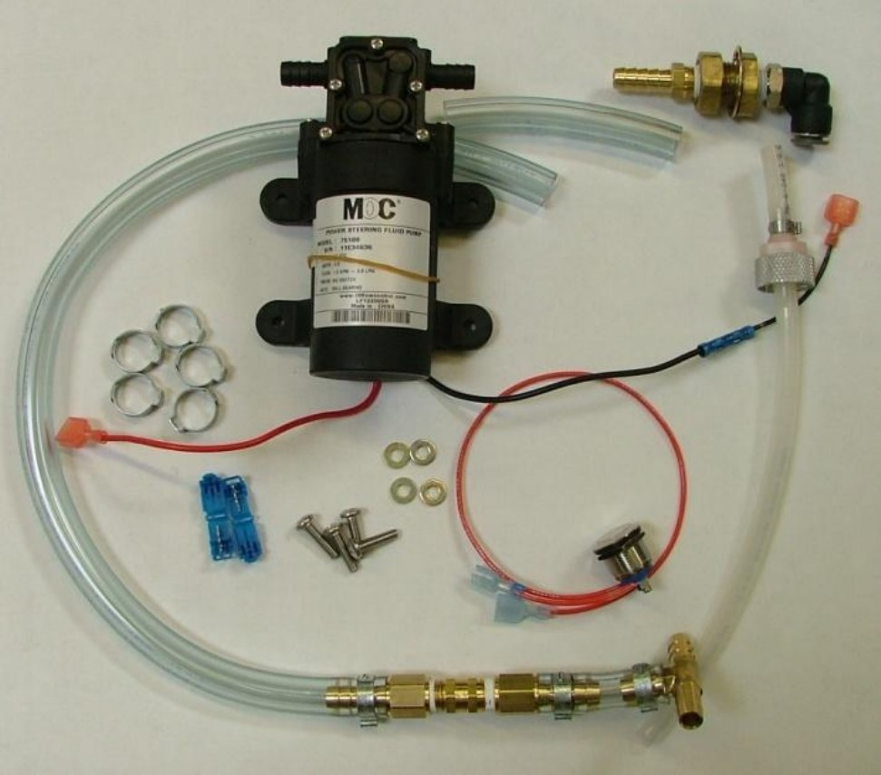
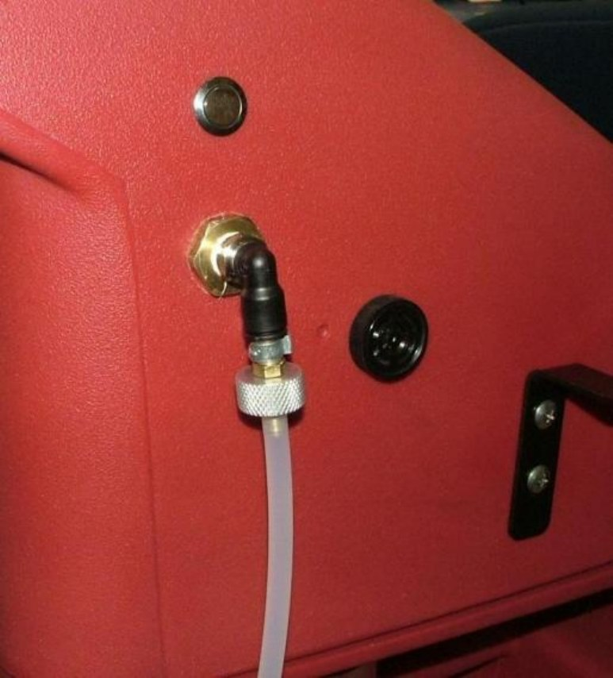
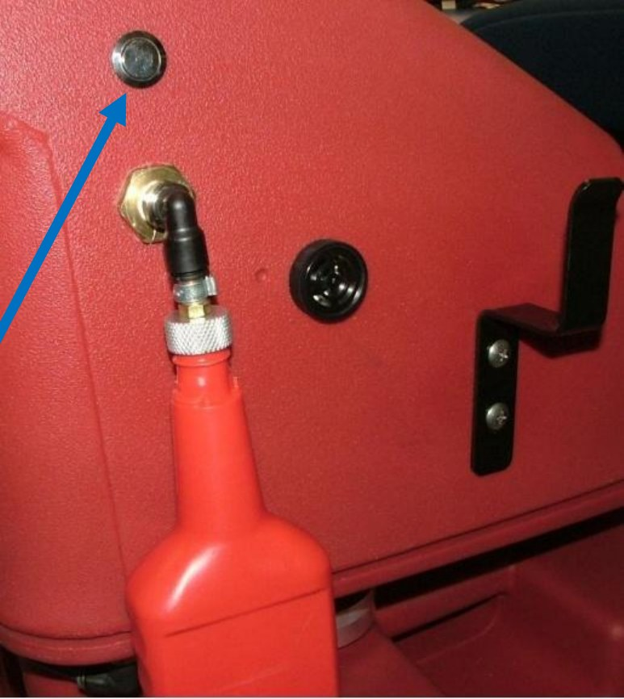

Doc no. MOC-TSB-12-01 // Vol. 12 No. 01 // Jan 16, 2012 // Transmission
Additive Dispensing Kit for ATF Machines
MOC has developed the On Board Additive Dispensing Kit (Part No. 98749) to dispense additives through a feature built into the Automatic Transmission fluid- exchange-machines. Especially useful in vehicles with sealed transmissions, with this Kit connected to the ATF machine additive products are added directly into the transmission.
What's new
It is now available to order.
Included in the Kit are all components needed for the installation of this feature to the ATF machine.
Once installed, the machine will function as normal. When needed, connect an opened bottle of the product you wish to add to the side of the transmission machine (as shown in Fig. A).
To add the product to the transmission, press and hold the button on the side of the machine (shown in Fig A). Once the bottle is depleted, release the button.
Contact
For more information, contact the Machine & Equipment Department at 866.244.6621.



Part numbers
| Part No. | Description | Notes |
|---|---|---|
| 98749 | On Board Additive Dispensing Kit Assembled Kit on a machine |